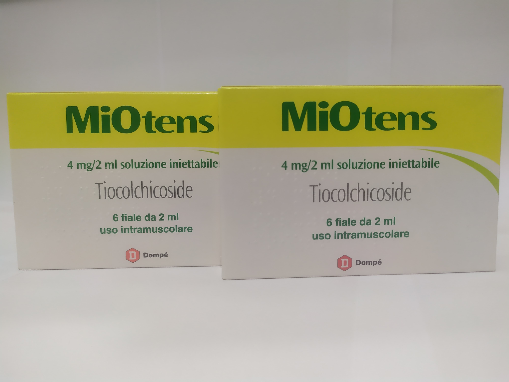

Заронтин-(Zarontin)
Заронтин или Суксилеп – оказывает противосудорожное действие, проявляющееся при малой форме эпилептических припадков Также эффективен при приступах миоклонического характера. Действие Заронтина обуславливается процессом угнетения моторного центра в коре головного мозга, повышением судорожных порогов. Препарат Заронтин не влияет на уровень концентрации кислот в ЦНС при применении согласно инструкцией в терапевтических дозах.Снижает частоту вероятности возникновения малых припадков, судорожных эпилептиформных состояний, подавляет пароксизмальную активность ЭЭГ, характерную при абсансах, что сопровождаются нарушением сознания. Заронтин эффективен в состояниях миоклинических приступов. В полном Объеме терапевтического эффекта проявляется в период до 8 недель.

Цена: 1400 грн/уп.
Заронтин капсулы - Zarontin capsule
Заронтин капсулы - это еще одна форма известного Заронтин сиропа, также оказывающего противосудорожное действие, проявляющееся при малой форме эпилептических припадков Оказывает такой же эффект при приступах миоклонического характера. Действие Заронтина обуславливается процессом угнетения моторного центра в коре головного мозга, повышением судорожных порогов. Доза Zarontin капсулы зависит от клинической картины заболевания, индивидуальной реакции пациента на лечение и переносимости. Лечение начинают с небольших доз. Дозы постепенно увеличивают.

Цена: 1800 грн/уп.
Депакин Хроно 500 - Depakine Chrono 500
Основным показанием к применению препарата Депакин Хроно 500 мг, желательно в качестве монотерапии, является первичная генерализованная эпилепсия: малые эпилептические приступы/абсансная эпилепсия, массивные билатеральные миоклонические судороги, большие приступы эпилепсии с миоклонией или без нее, фотосенсы.
Цена: 400 грн/уп.
Фризиум, фрисиум капсулы 10мг - Frisium - 10mg
Препарат Фризиум – вызывает уменьшение напряженности, раздражения, возбуждения, агрессивности, способствует нормализации сна. Основное действующее вещество – клобазам – анксиолитик, эффективен в лечении невротических расстройств личности неуточненного генеза. Обладает противосудорожными свойствами. Также эффективно тормозит беспокойство, раздражительность. Механизм действия обусловлен способностью молекул клобазама вступать во взаимодействие с рецепторами бензодиазепина. Может применяться в том числе при алкогольном синдроме и подготовке к хирургическим вмешательствам, операциям.

Цена: 650 грн/уп.
Нуклеодол – Nucleodol
Нуклеодол – это пищевая добавка, действующая на периферическую нервную систему, показанная при различных формах периферических невропатий. Обеспечивает необходимые питательные элементы в ситуациях, когда может быть поражена периферическая нервная система, способствуя защите, восстановлению и функционированию тканей, влияющих на нейропатию. В результате исследования специфических потребностей при заболеваниях периферической нервной системы лаборатории Fisiopharma разработали Nucleodol, продукт с эксклюзивной формулой, поскольку на рынке нет другой пищевой добавки, содержащей такие же компоненты.

Цена: 1200 грн/уп.
Cogiton флаконы - Когитон флаконы
Пищевая добавка на основе гинкго билоба, витаминов С-Е-В, селена, L-цистеина, карнозина, коэнзима Q10, β-каротина. Гинкго билоба способствует памяти и функциональной осведомленности. Витамины группы В способствуют поддержанию нормальной функции нервной системы. Может быть использован у пациентов с диабетом и целиакией.Возможна продажа по флаконам - 1 флакон / 100грн.Хранить в недоступном для детей месте. Добавки не предназначены в качестве замены разнообразного питания. Не превышать дозировку.

Цена: 850 грн/уп.
Миотенс ампулы - MiOtens ампулы
Тиоколхикозид — миорелаксант, тормозящий сокращение, используется при ревматических процессах, травмах, для снятия гипертонуса мышц. Действует на ЦНС как антагонист ингибиторного нейромедиатора ГАМК, взаимодействуя высокоселективным образом с габаминергическими рецепторами. Показано также высокое сродство к глицинергическим рецепторам, чувствительным к стрихнину. Высокая активность габаминергических и глицинергических рецепторов и его агонистическое действие на них обоснованно объясняют его тормозное действие на ЦНС, что проявляется снижением мышечного тонуса, то есть действует как миорелаксант.

Цена: 670 грн/уп.
НеураксБиотик Спектрум саше - NeuraxBiotic Spectrum sashe
Это пищевая добавка, содержащая определенный, проверенный и научно оцененный пробиотический штамм Lactobacillus plantarum PS128. NeuraxBiotic Spectrum не имеет побочных эффектов, он не содержит глютена, лактозы и красителей. Neurax Biotic Spectrum – пищевая добавка в саше, содержащая Lactobacillus plantarum DR7 и магний. Штамм бактерий, содержащийся в NeuraxBiotic Spectrum, устойчив к желудочной кислоте, поэтому он может размножаться и действовать в кишечнике. Существует взаимная связь между мозгом и кишечной флорой через ось кишечник-мозг. Бактерии, естественно живущие в нашем кишечнике, производят множество веществ, которые посылают информацию в наш мозг. Таким образом, кишечные бактерии могут оказывать влияние на наши эмоции, самочувствие и стресс.
Цена: 1650 грн/уп.
Липосом Форте - Liposom forte
Липосом Форте – препарат для лечения заболеваний нервной системы; психостимулятор, ноотропное средство. Повлиявшие на физико-химические свойства мембран нейронов, гипоталамические фосфолипиды изменяют адаптацию рецепторов центральных нейронов к лечению. Liposom Forte применяется в качестве вспомогательного средства при лечении метаболических церебральных нарушений вследствие нейроэндокринных расстройств.

Цена: 750 грн/уп.
Трикортин 1000 - Tricortin 1000
Препарат Трикортин относится к группе ноотропов и позволяет справиться с неврозами разной этиологии. Трикортин не влияет на функциональность других органов и систем и не вредит их работе. В состав Трикотрина 1000 входят фосфолипиды, цианокобаламин (витамин В12) и дополнительные эфиры. Такой компонентный состав способен восстановить нарушенные функции головного мозга.
Цена: 750 грн/уп.
Делецит(Холина альфосцерат) - Delecit(colina alfoscerato)
Делецит 600мг/7мл - Холиномиметик. Является предшественником ацетилхолина. Оказывает влияние преимущественно на холинергические рецепторы в ЦНС. Глицерофосфат, который образуется при расщеплении холина альфосцерата, является предшественником фосфолипидов (фосфатидилхолина) мембраны нейрона. Облегчает передачу нервных импульсов в холинергических нейронах, улучшает пластичность нейрональных мембран и функцию рецепторов.
Цена: 1250 грн/уп.
Глиатилин флаконы 600mg/7ml - Gliatilin 600mg/7ml
Глиатилин 600 мг/7 мл - улучшает передачу нервных импульсов в холинергических нейронах; положительно влияет на пластичность нейрональных мембран и функцию рецепторов. Улучшает церебральный кровоток, усиливает метаболические процессы головного мозга, активирует структуру ретикулярной формации головного мозга и восстанавливает сознание при травматическом поражении головного мозга. Оказывает профилактическое и корректирующее действие на такие патогенетические факторы инволюционного психоорганического синдрома, как изменение фосфолипидного состава мембран нейронов и снижение холинергической активности.
Цена: 1300 грн/уп.
Гонази(гонаси) Ампулы - Gonasi HP 5000 U.I. /1ml Ампулы
GONASI HP 5000 / 1ml – лечебное средство при урогенитальной патологии, а также половой гормон Необходимость использования Гоназа зависит от диагноза. Проводить лечение препаратом Gonasi Hp следует согласно инструкции и рекомендации врача. Внимательно изучите противопоказания перед применением Гоназа. Не принимайте препарат, если у Вас есть аллергия на действующее вещество Гоназа (Гонадотропин Хорионический) или на любой вспомогательный компонент лекарства.
Цена: 1350 грн/уп.
Лоразепам 2,5 мг таблетки - Lorazepam 2,5 мг таблетки
Анксиолитическое средство (транквилизатор), производное бензодиазепина. Оказывает анксиолитическое, седативное, снотворное, противосудорожное, центральное миорелаксирующее, противорвотное действие. Механизм анксиолитического, седативного и снотворного действия связывается с усилением тормозного воздействия GABA в ЦНС. Противосудорожное действие, по-видимому, частично обусловлено усилением пресинаптического торможения; угнетается распространение эпилептогенной активности, возникающей в эпилептогенных очагах в коре, таламусе и лимбических структурах, но не снимается возбужденное состояние.

Цена: 500 грн/уп.
Валиум(Диазепам) капли - Valium(Diazepam) капли
Валимум (Дазепам) – используют при тревожных расстройствах, бессоннице (бензодиазепины показаны только при тяжелых расстройствах, особенно для пациентов, имеющих критические патологические состояния). Устранение мышечных спазмов, ассоциированных со спазмами церебральной этиологии. В составе комплексного лечения эпилепсии. Премедикация при незначительных хирургических вмешательствах. Диазепам является одним из основных бензодиазепиновых транквилизаторов. Оказывает анксиолитическое, центральное миорелаксирующее, противосудорожное, седативное и умеренное снотворное действие. Проявляет незначительную вегетативную активность. Механизм действия диазепама связан с ГАМК, являющимся тормозящим медиатором в ЦНС. Известно, что ГАМК-эргические нейроны тормозят деятельность других нейронов нейронов. Препарат снижает активность фермента ГАМК-трансаминазы, за счет этого повышая содержание ГАМК в мозге.
Цена: 700 грн/уп.
Ривотрил(Клоназепам) таблетки - Rivotril(Clonazepam) таблетки
Противосудорожный препарат бензодиазепинового ряда – Ривотрил, оказывает терапевтическое влияние благодаря основному компоненту клоназепина. Медикамент усиливает влияние гамма-аминомасляной кислоты, замедляя передачу нервных импульсов, снижает возбудимость подкорки головного мозга и скорость постсинаптических спинальных рефлексов. Пресинаптическое торможение помогает предотвратить распространение эпилептогенной активности, не влияя на возбуждение в очаге.

Цена: 300 грн/уп.
Ривотрил(Клоназепам) капли - Rivotril(Clonazepam) капли
Противосудорожный препарат бензодиазепинового ряда в форме капель – Ривотрил капли, оказывает терапевтическое влияние благодаря основному компоненту клоназепина. Теперь в форме капель. Ривотрил в каплях облегчает прием лекарства и доступность их применения. Медикамент усиливает влияние гамма-аминомасляной кислоты, замедляя передачу нервных импульсов, снижает возбудимость подкорки головного мозга и скорость постсинаптических спинальных рефлексов. Пресинаптическое торможение помогает предотвратить распространение эпилептогенной активности, не влияя на возбуждение в очаге.

Цена: 300 грн/уп.
Ксанакс(Алпразолам) 2мг таблетки - Xanax(Alprazolam) 2mg
Ксанакс (Алпразолам) – это одна из форм бензодиазепинов, оказывающих помощь при тревожности и бессоннице. Препарат замедляет работу нервной системы, помогает снять тревогу, чувство угрозы. Человек успокаивается, его жизненный ритм налаживается. Но только при соблюдении всех правил и рекомендаций по приему лекарств. Помимо борьбы с тревожностью, Xanax помогает справиться с алкогольной зависимостью. При отказе от спиртного у человека возникают ощущение тревоги, панические атаки и другие проблемы, разрешением которых становится назначенный врачом препарат.
Цена: 1700 грн/уп.
Могадон(Нитразепам) таблетки - Mogadon(Nitrazepam) таблетки
Могадон действующее вещество - нитразепам является снотворным средством бензодиазепиновой природы. Выявляет выраженный снотворный, анксиолитический, седативный, противосудорожный и миорелаксантный фармакологические эффекты. Механизм действия препарата заключается в активизации бензодиазепиновых рецепторов ГАМК-бензодиазепин-хлорионофорного комплекса, который повышает чувствительность ГАМК-рецепторов к медиатору (ГАМК) и стимулирует внутриклеточную проницаемость цитоплазматической мембраны для ионов хлора, за счет чего обеспечивает угнетение. Нитразепам ингибирует способность нейронов головного мозга к возбуждению, а также условные и полисинаптические спинномозговые рефлексы.
Цена: 650 грн/уп.
Бромазепам таблетки - Bromazepam таблетки
Бромазепам оказывает анксиолитическое, седативное, снотворное, противосудорожное и центральное миорелаксирующее действие. Анксиолитическое действие обусловлено возбуждением бензодиазепиновых рецепторов, происходит преимущественно на уровне миндалевидного комплекса лимбической системы и проявляется в уменьшении эмоционального напряжения, снижении тревоги, страхе. Седативный эффект обусловлен влиянием на ретикулярную формацию ствола головного мозга и неспецифические ядра таламуса и проявляется уменьшением невротических симптомов (тревоги, страха).
Цена: 480 грн/уп.
Триттико 75мг таблетки - Trittico 75мг таблетки
Триттико действующее вещество которого Тразодон – триазолпиридиновое производное. Он эффективен для лечения депрессивных состояний, в том числе депрессии, связанной с тревожностью и нарушением сна и отличается быстрым началом действия (около 1 недели). Тразодон является ингибитором обратного захвата серотонина и антагонистом 5-HT2 рецепторов, активизация которых обычно связана с появлением бессонницы, тревожности, психомоторного возбуждения и половой функции.

Цена: 450 грн/уп.
Оки(Кетопрофен) 80мг порошок - Oki(Ketoprofen) 80mg порошок
OKI – медикамент для терапии опорно-двигательного аппарата. Активным ингредиентом, содержащимся в Oki, то есть веществом, оказывающим препарату его фармакологическое действие, является кетопрофен, нестероидный противовоспалительный препарат (НПВП, т.е. ) с болеутоляющим и жаропонижающим действием; проще говоря, он может уменьшить воспаление, уменьшить боль, снизить имеющуюся лихорадку. В частности, в рецептуре Oki активный ингредиент содержит аминокислоту лизин в форме соли, выбор которой позволяет улучшить растворимость и переносимость препарата, чтобы гарантировать более быстрое всасывание из желудочно-кишечного тракта.

Цена: 350 грн/уп.
Ницетил-(Nicetile) таблетки
L-ацетилкарнитин является природным изомером вещества, которое в физиологических условиях присутствующего в организме в различных органах и тканях, в том числе в ЦНС, участвует в метаболизме жирных кислот и углеводов. При патологии оказывает нейропротективное действие, особенно по отношению к нейронам и их органеллам (митохондриям), а также как трофический фактор способствует восстановлению структуры клеток.

Цена: 1350 грн/уп.
Ницетил-(Nicetile) Cаше
L-ацетилкарнитин является природным изомером вещества, которое в физиологических условиях присутствующего в организме в различных органах и тканях, в том числе в ЦНС, участвует в метаболизме жирных кислот и углеводов. При патологии оказывает нейропротективное действие, особенно по отношению к нейронам и их органеллам (митохондриям), а также как трофический фактор способствует восстановлению структуры клеток.

Цена: 1180 грн/уп.
Ницетил-(Nicetile) Ампулы
L-ацетилкарнитин является природным изомером вещества, которое в физиологических условиях присутствующего в организме в различных органах и тканях, в том числе в ЦНС, участвует в метаболизме жирных кислот и углеводов. При патологии оказывает нейропротективное действие, особенно по отношению к нейронам и их органеллам (митохондриям), а также как трофический фактор способствует восстановлению структуры клеток.

Цена: 1500 грн/уп.
Сабрил саше - Sabril саше
Сабрил саше – противоэпилептическое средство. Необратимый селективный ингибитор GABA аминотрансферазы. Повышает концентрацию GABA в синапсах, увеличивая тем самым тормозные эффекты. Угнетает повышенную возбудимость нейронов, лежащую в основе возникновения и распространения эпилептических судорог. В период лечения необходим бережный медицинский контроль выявления побочных неврологических нарушений. Резкое прекращение лечения может привести к восстановлению судорог.
Цена: 1550 грн/уп.
Плавикс №84(Клопидогрель)- Plavix №84 (klopidogrel)
Клопидогрель селективно ингибирует связывание аденозиндифосфата (АДФ) с рецептором на поверхности тромбоцита и последующую активацию комплекса GPIIb/IIIa под действием АДФ, и, таким образом, ингибирует агрегацию тромбоцитов. Для создание активного ингибитора агрегации тромбоцитов необходима био трансформация клопидогреля. Клопидогрель также ингибирует агрегацию тромбоцитов, индуцированную другими агонистами, путем блокирования повышения активности тромбоцитов высвобожденным АДФ. Клопидогрель не обратно связывается с АДФ-рецепторами тромбоцитов. Следовательно, тромбоциты, вошедшие во взаимодействие с стеклопидогрелем, повреждаются к концу их жизненного цикла, и нормальная функция тромбоцитов восстанавливается со скоростью, соответствующей скорости обновления тромбоцитов.

Цена: 1100 грн/уп.
Крестор 20мг-(Crestor 20mg)
Первоначальная гиперхолестеринемия (тип IIа, включая семейную гетерозиготную гиперхолестеринемию) или смешанная гиперхолестеринемия (тип ІІв) в качестве дополнения к диете, когда диета и другие медикаментозные методы лечения (например, физические упражнения, уменьшение веса) недостаточны. Семейная гомозиготная гиперхолестеринемия как дополнение к диете и другой холестерин понижающей терапии (например, ЛПНП-аферез) или в случаях, когда такая терапия не подходит пациенту.

Цена: 650 грн/уп.
Крестор 40мг-(Crestor 40mg)
Первоначальная гиперхолестеринемия (тип IIа, включая семейную гетерозиготную гиперхолестеринемию) или смешанная гиперхолестеринемия (тип ІІв) в качестве дополнения к диете, когда диета и другие медикаментозные методы лечения (например, физические упражнения, уменьшение веса) недостаточны. Семейная гомозиготная гиперхолестеринемия как дополнение к диете и другой холестерин понижающей терапии (например, ЛПНП-аферез) или в случаях, когда такая терапия не подходит пациенту.

Цена: 750 грн/уп.
Весел 600 УЛС / 2 мл №10(Дуэ ф) - Vessel 600 ULS/ 2 ml №10
Ангиопатии с повышенным риском тромбообразования, в т.ч. после перенесенного инфаркта миокарда; нарушение мозгового кровообращения, включая острый период ишемического инсульта и период раннего восстановления; дисциркуляторная энцефалопатия, обусловленная атеросклерозом, сахарным диабетом, гипертонической болезнью; сосудистая деменция; окклюзионные поражения периферических артерий атеросклеротического и диабетического генеза; флебопатии, тромбозы глубоких вен; микроангиопатии (нефропатия, ретинопатия, нейропатия) и макроангиопатии (синдром диабетической стопы, энцефалопатия, кардиопатия) при сахарном диабете;

Цена: 1050 грн/уп.
Аденурик 80мг - Adenuric 80мг
Аденурик – это припарат, применяемый при лечении хронической гиперурикемии, при заболеваниях, сопровождающихся отложением кристаллов уратов, в том числе при наличии тофусов и/или подагрического артрита в настоящее время или в анамнезе. Эффект лекарственного средства оказывается достаточно быстро, что позволяет повторное определение концентрации мочевой кислоты через 2 недели. Целью лечения является уменьшение концентрации мочевой кислоты и поддержание ее на уровне менее 6 мг/дл (357 мкмоль/л).
Цена: Уточнять у менеджера
Колхицин(Колхицын)-(Colchicine)
Действующим веществом лекарственного средства Колхицин Лирка является колхицин - алкалоид, экстрагированный из семян безвременнику осеннего, травянистого растения, принадлежащего к семейству лилейных.Экстракт этого растения имеет диуретические, анальгетические и противовоспалительные свойства, поэтому его применяют при ревматизме, артрите и, особенно, как противоподагрическое средство.Хотя механизм противоподагрического действия колхицина полностью не выяснен, считают, что препарат уменьшает воспалительную реакцию на отложение кристаллов мононатрия урата в тканях благодаря способности подавлять метаболизм,подвижность и хемотаксис полиморфноядерных клеток и/или других функций лейкоцитов. Колхицин также оказывает непосредственное влияние на отложение мононатрия урата путем уменьшения образования молочной кислоты полиморфноядерными лейкоцитами и опосредованно – путем угнетения фагоцитоза.

Цена: 500 грн/уп.
Ируксол-(Iruxol)
Ируксол (IRUXOL) - это уникальное средство для лечения острых хронических и труднозаживающих ран, наружного применения. Основным компонентом препарата является коллагенез, ферменты которого эффективно расщепляют некротические ткани, гнойные массы, струпья и в следствии активизируются процессы заживления, грануляция и эпителизация раны. Антибактериальные свойства Iruxol обеспечивают наиболее хорошее микроклимат в ране, для скорейшего заживления и защиты от новых инфекций.

Цена: 760 грн/уп.
Ультрапрокт свечи-(Ultraproct supposte)
Флуокортолон оказывает противовоспалительное, против аллергическое и противозудное действие. Уменьшается дилятация капилляров, межклеточный отек и тканевая инфильтрация. Угнетается пролиферация капилляров. Препарат Ультрапрокт содержит два эфира флуокортолона, начало главного действия которых приходится на разное время, что позволяет быстро достичь эффекта и долго его поддерживать (двухфазное действие). Цинхокаин как локальный анестетик уменьшает болевые ощущения.

Цена: 600 грн/уп.
Ультрапрокт мазь-(Ultraproct unguento)
Флуокортолон оказывает противовоспалительное, против аллергическое и противозудное действие. Уменьшается дилятация капилляров, межклеточный отек и тканевая инфильтрация. Угнетается пролиферация капилляров. Препарат Ультрапрокт содержит два эфира флуокортолона, начало главного действия которых приходится на разное время, что позволяет быстро достичь эффекта и долго его поддерживать (двухфазное действие). Цинхокаин как локальный анестетик уменьшает болевые ощущения.

Цена: 600 грн/уп.
Дайвонекс мазь-(Daivonex unguento)
Синтетический аналог более активного метаболита природного витамина D3. Вызывает дозозависимое торможение пролиферации кератиноцитов (значительно повышенной у больных псориазом) и ускоряет их морфологическую дифференциацию. Незначительно влияет на метаболизм кальция в организме. Ингибитор активации Т-лимфоцитов, вызванной интерлейкином 1.

Цена: 600 грн/уп.
Адвантан Крем 50г-(Advantan Crema 50g)
Адвантан при местном применении подавляет воспалительные, аллергические реакции кожи, а также реакции, связанные с гиперпролиферацией клеток, что приводит к ослаблению как объективных симптомов (покраснение, отек, инфильтрация, лихенификации), так и субъективных жалоб (зуд, жжение. , боль). При местном применении метил преднизолонаацепоната в эффективной дозе системный эффект является минимальным. При нанесении на большие участки кожи уровень кортизола в плазме крови остается в пределах нормального диапазона, не нарушается его циркадный ритм. Также не установлено уменьшение экскреции кортизола в суточной моче.

Цена: 600 грн/уп.
Адвантан Крем 20г-(Advantan Crema 20g)
Адвантан при местном применении подавляет воспалительные, аллергические реакции кожи, а также реакции, связанные с гиперпролиферацией клеток, что приводит к ослаблению как объективных симптомов (покраснение, отек, инфильтрация, лихенификации), так и субъективных жалоб (зуд, жжение. , боль). При местном применении метил преднизолонаацепоната в эффективной дозе системный эффект является минимальным. При нанесении на большие участки кожи уровень кортизола в плазме крови остается в пределах нормального диапазона, не нарушается его циркадный ритм. Также не установлено уменьшение экскреции кортизола в суточной моче.

Цена: 500 грн/уп.
Спираль Нова Т380 - Nova Т380 (Bayer)
Показано для внутриматочной контрацепции женщинам детородного возраста. Уровень беременности составляет 1,26 на 100 женщин-лет. После удаления NOVA-T быстро возобновляется фертильность. Если устройство извлекается внутри цикла и у женщины был половой акт в течение недели, она подвержена риску беременности, если новое устройство не будет вставлено сразу после удаления. Медные ВМС предотвращают беременность, предотвращая оплодотворение. Это основано на подавлении транспорта сперматозоидов и яйцеклеток и способности сперматозоидов оплодотворять яйцеклетки.
Цена: Уточнять у менеджера
Метергин-(Метилэргометрин) / Methergin(Metilergometrina)
Methergin используется в акушерстве:
Для лечения неполной инволюции матки (расширенная матка из-за слизи, крови и тканей, которые невозможно устранить), лохиометрии и послеродового кровотечения.
Methergin обладает метилергометрином как активное вещество, используемое как мощный стимулятор матки.
Метилергометрин является естественным полусинтетическим производным, алкалоидом спорыньи, эргометрином.
Это лекарство действует, вызывая сокращение мышц матки.
Предполагаемое время начала терапевтического действия составляет от 5 до 10 минут, когда препарат вводится перорально, а фармакологическое действие длится от 4 до 6 часов.

Цена: 300 грн/уп.
Сайтотек,Мизопростол-(Cytotec,Читотек)
Гастропротекторное средство синтетический аналог PgE1. Увеличивает образование защитной слизи и гидрокарбоната; способствует усилению кровотока в слизистой. Ускоряет заживление эрозий, язвы желудка и 12-перстной кишки, в ряде случаев способен предотвратить их образование. Препарат оказывает непосредственное влияние на париетальные клетки желудка, подавляет базальную, ночную, стимулированную (пищей, гистамином, пентагастрином) секрецию HCl. Уменьшает базальную (но не стимулированную гистамином) продукцию пепсина.

Цена: 900 грн/уп.
Неурабен капсулы №30 - Neuraben capsule №30,Витамины группы B
Неурабен капсулы,Витамины группы B - это лекарственное средство, содержащее витамины группы B, которые вызывают успокаивающий эффект. Обычно, в ряде случаев, нужен прием витаминов группы B. Эти таблетки могут спасти жизнь. Neuraben является Полезным для пожилых людей, женщин в период беременности, вегетарианцев, а также людей, имеющих заболевания, связанные с ухудшением усвоения этих микроэлементов. Капсул Неурабена способно не только улучшить настроение и устранить симптомы депрессии, но и улучшить когнитивные функции мозга. Также применение капсул Neuraben помогает при лечении таких болезней как: Псориаз, Полиневрит, Алкоголизм, Нервные срывы, и т.д.

Цена: Уточнять у менеджера
Зимафлуор(зимафлор)-(Zymafluor)
Каждый человек задумывается о здоровье своих зубов только тогда, когда они начинают болеть. И сожалеют о том, что вовремя не заботились о своих зубах. Дети не осознают своих проблем с зубами в раннем возрасте. Поэтому именно родителям нужно заботиться о здоровье зубов их ребенка еще с детства. Аптека "FarmItal" предлагает действенное, витаминное средство для детей - Зимафлуор (Zymafluor, зимафлуор). Своевременное употребление витаминов способствует развитию здоровых зубов у детей.Улучшает прочность зубов, устойчивость к температурным перепадам и предупреждает такие болезни как: кариес, гингивит, пульпит, периодонтит, гранулема (киста зуба). Медики акцентируют: зубы "любят" кальций, магний, цинк, фосфор, марганец, медь. Именно в витаминах Zymafluor содержатся все эти полезные вещества.

Цена: 550 грн/уп.
Лозид-Lozid
LOZID – лекарственный препарат, применяемый в терапии сердца и сосудов. Необходимость использования лозида зависит от диагноза. Проводить лечение Lozid следует согласно инструкции и рекомендации врача. Внимательно изучите противопоказания перед применением Лозида. Не принимайте препарат, если у Вас есть аллергия на действующее вещество Лозид (Гидрохлортиазид+Лозартан) или какой-либо вспомогательный компонент этого лекарственного средства.
Цена: Уточнять у менеджера
Озодроп гель - Ozodrop gel
Ozodrop – это смазочный, защитный, увлажняющий и успокаивающий офтальмологический гель на основе гипромеллозы и озонированного растительного масла. Благодаря смазочным, увлажняющим и защитным свойствам на поверхности глаза он полезен: для содействия репаративным процессам после хирургического или травматического стресса; при лечении симптомов, связанных с воспалительными патологиями; при лечении сухости глаз, даже при наличии раздражения, вызванного условиями окружающей среды или механическим воздействием, например применение контактных линз.
Цена: 1150 грн/уп.